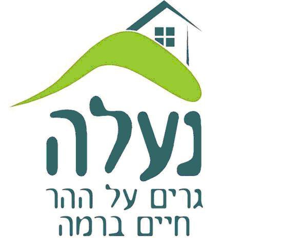

| Country | Capital | Citizen Number | GNP PPP |
|---|---|---|---|
| Israel | Jerusalem | 9.364M | 488.5B$ |
| Greece | Athens | 10.64M | 214.9B$ |
| Poland | Warsaw | 37.75M | 679.4B$ |
| Britain | London | 67.33M | 3.131T$ |
| Canada | Ottawa | 38.25M | 1.988T$ |
| Name | Year | Summary | Director name | Genre |
|---|---|---|---|---|
| IT | 2017 | When young children in the little town Derry, Maine goes missing a group of seven kids find out that the killer is not a man. The killer is the evil clown Pennywise who can shapeshift into the thing you are most afraid of. The kids, also known as the Losers Club, decide to fight and kill It. | Andy Muschietti | Horror |
| Sinister | 2012 | A controversial true crime writer finds a box of super 8 home movies in his new home, revealing that the murder case he is currently researching could be the work of an unknown serial killer whose legacy dates back to the 1960s. | Scott Derrickson | Horror |
| The Ring | 2002 | The plot centers on Rachel Keller, a journalist who must figure out a way to escape death after watching a cursed videotape that seemingly kills the viewer seven days after viewing it. | Gore Verbinski | Horror |
| Star Wars 4 | 1977 | Luke Skywalker joins forces with a Jedi Knight, a cocky pilot, a Wookiee and two droids to save the galaxy from the Empire's world-destroying battle station, while also attempting to rescue Princess Leia from the mysterious Darth Vader | George Lucas | Science Fiction |
| Series Name | Seasons | Summary | Language | Poster | Rating | Genre |
|---|---|---|---|---|---|---|
| Grey's Anatomy | 19 | Grey's Anatomy is an American medical drama television series focusing on the personal and professional lives of surgical interns, residents, and attendings at the fictional Seattle Grace Hospital. | English |  |
7.6/10 | Drama |
| How I met your mother | 9 | Ultimately, How I Met Your Mother is a show about love, and during nine seasons, the five main characters experience plenty of ups and downs inВ . The series revolves around Ted Mosby (Josh Radnor) who in the year of 2030 tells the story to his son and daughter how he met their Mother | English | 8.3/10 | Sitcom | |
| Seinfeld | 9 | Seinfeld stars Jerry Seinfeld as a stand-up comedian whose life in New York City is made even more chaotic by his quirky group of friends who join him in wrestling with life's most perplexing, yet often trivial questions. | English | 8.9/10 | Sitcom | |
| Community | 6 | A former lawyer attends a community college when it is discovered he faked his Bachelor's degree. In an attempt to get with a student in his Spanish class, he forms a Spanish study group. To his surprise, more people attend the study group and the group of misfits form an unlikely community. | English | 8.5/10 | Comedy |
| Restaurant name | Seatings number | City | Language | Poster | Rating | Cuisine |
|---|---|---|---|---|---|---|
| Joya | 90 | Herzeliya | Hebrew | 8.5/10 | Italian | |
| GDB | 40 | Tel Aviv | Hebrew | 8.4/10 | American | |
| El Gaucho | 120 | Netanya | Hebrew | 8.7/10 | Grill | |
| Fat Vinny | 110 | Netanya | Hebrew | 8.6/10 | Italian |
| Name | City | City picture | Date of Birth | Hobbies | |
|---|---|---|---|---|---|
| Nir Gluskin | Lod | 01/12/98 | nirgluskin@gmail.com | Karting | |
| Maya Bargig | Giv'atayim | 14/12/99 | mayabargig@gmail.com | Sports, Playing Music | |
| Uri Ben-Gaib | Ramla | 15/03/98 | uri32655@gmail.com | Music, Books | |
| Liron Pitussi | Netanya | 26/10/99 | lironefit@gmail.com | Counting Sheep | |
| Ramin Aliev | Holon | 08/05/1998 | Raminx524@Gmail.com | Snooker | |
| Noa Zelinger | Naela |  | 15/07/2001 | noazel123@gmail.com | Singing |
| Ori Livne | Giv'at Ada | 17/06/2000 | orior200@gmail.com | Maccabi Haifa | |
| Sagi Pacharkovski | Ma'ale Adumim | 24/02/2002 | sagipach153@gmail.com | Listening to songs | |
| Yuval Azulai | Rishon LeZion | 20/10/1997 | yuvalazulai2016@gmail.com | Playing the piano | |
| Eran Toledano | Mazkeret Batya | 28/5/2002 | toledanoeran3@gmail.com | Gymnastics, Floor exercises | |
| Omer Goldberger | Jerusalem | 18/4/2001 | purmki456@gmail.com | Reading | |
| Sunny Arbiv | Hadera | 12/06/2001 | Arbiv.Sunny@gmail.com | Drumming | |
| Ofek Madjar | Rishon LeZion | 16/08/02 | Ofek.majar@gmail.com | Traveling | |
| Nitzan Ben Shimon | Holon | 29/12/2000 | nitzanbs2248@gmail.com | Cooking and Baking | |
| David Azulae | Jerusalem | 07/02/01 | meyer2615@gmail.com | Running, Cooking, Reading | |
| Hila Zagdon | Ra'anana | 26/10/2001 | hilatoar@gmail.com | Art, travelling | |
| Ohad Raz | Even Yehuda | 18/03/01 | ohadraz12@gmail.com | working out, training and playing music | |
| Ben Kilinski | Ramat Gan | 10/03/1997 | ben.kilinski@gmail.com | working out, modern family, training and playing music | |
| Shahaf Segall | binyamina | 22/02/98 | goigadol360@gmail.com | cooking,hiking | |
| Dan Zemlyansky | Bat Yam | 04/05/01 | danzemly000@gmail.com | video games, cars |